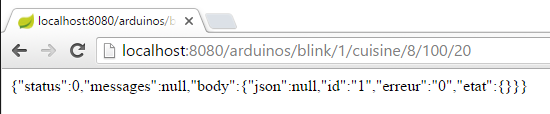
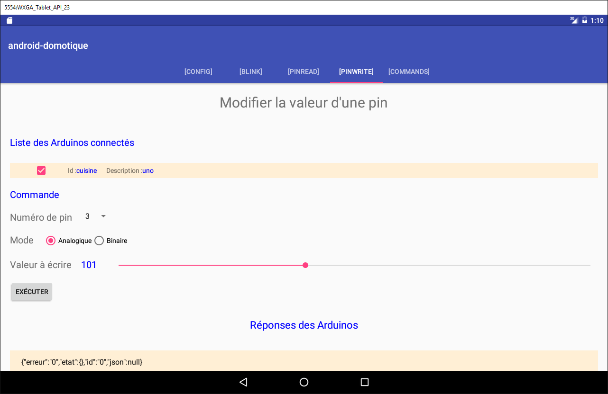
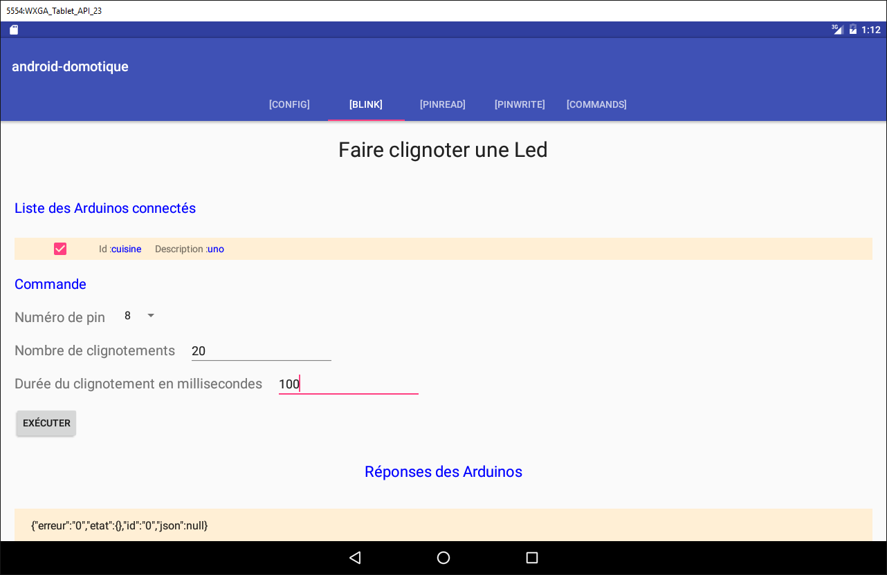
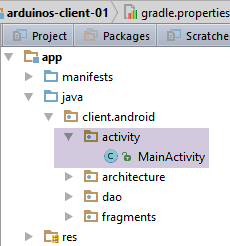
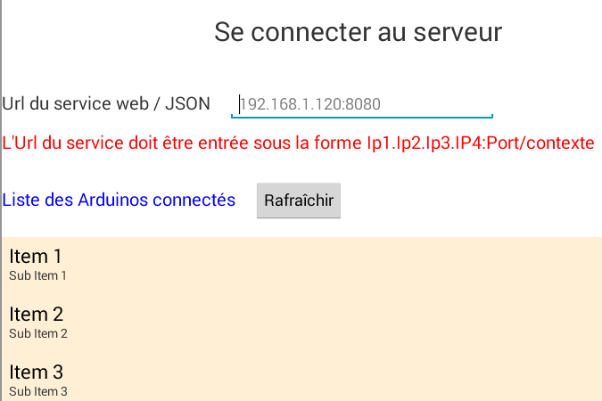
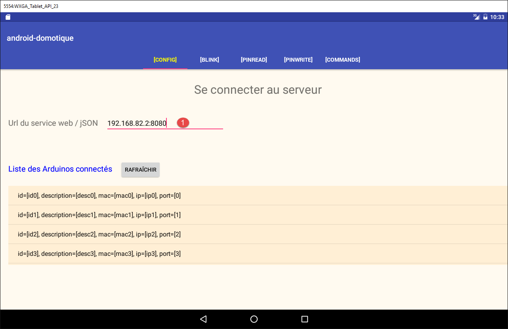

5. TP 2 - 使用安卓平板控制Arduino
接下来我们将学习如何使用平板电脑控制 Arduino 开发板。参考示例为课程中的项目 [client-android-skel]（参见第 2 段）。
5.1. 项目架构
整个项目将采用以下架构：
 |
- [1]模块、Web服务器（jSON）及Arduino开发板将由我们提供；
- 您需要构建模块 [2]，并编程 Android 平板电脑以与 Web 服务器 / jSON 进行交互。
5.2. 硬件
您可使用以下组件：
- 带以太网扩展板的Arduino、一个LED和一个温度传感器；
- 一个 miniHub 模块（需与另一名学生共享）；
- 一条 USB 数据线，用于为 Arduino 供电；
- 两根网线，用于将Arduino和PC连接到同一局域网；
- 一台安卓平板电脑；
5.2.1. Arduino
 |
以下是将各组件连接在一起的操作步骤：
- 从您的 PC 上拔下网线；
- 使用网线将 PC 与 Arduino 连接；
- 您所使用的 Arduino 已预先编程。其 IP 地址将设置为 [192.168.2.2]。 为了让您的 PC 能够识别 Arduino，必须在 [192.168.2] 网络中为其分配 IP 地址。 这些Arduino已预设为与地址为IP的PC进行通信。操作步骤如下：
访问 [Panneau de configuration\Réseau et Internet\Centre Réseau et partage]：
 |
- 在 [1] 中，点击链接 [réseau local]；
- 在 [2] 中，点击本地网络中的 [Propriétés] 按钮；
 |  |
- 在 [3] 中，点击地图 [réseau local] 的属性 [IPv4]；
- 在 [4] 中，为该网卡分配 IP 地址 IP [192.168.2.1] 及子网掩码 [255.255.255.0]；
- 在 [5] 中，根据需要多次点击 [OK] 以退出向导。
5.2.2. 平板电脑
- 使用您的 Wi-Fi 密钥，将您的电脑连接到我们指定的 Wi-Fi 网络。请对您的平板电脑执行相同的操作；
- 请在DOS窗口中输入[ipconfig]，以验证您的PC设备的Wi-Fi地址。 您将看到类似 [192.168.x.y] 的地址；
dos>ipconfig
Configuration IP de Windows
Carte réseau sans fil Wi-Fi :
Suffixe DNS propre à la connexion. . . :
Adresse IPv6 de liaison locale. . . . .: fe80::39aa:47f6:7537:f8e1%2
Adresse IPv4. . . . . . . . . . . . . .: 192.168.1.25
Masque de sous-réseau. . . . . . . . . : 255.255.255.0
Passerelle par défaut. . . . . . . . . : 192.168.1.1
- 请检查您平板电脑的 IP Wi-Fi 地址。如果您不知道如何操作，请咨询您的指导老师。您会找到类似 [192.168.x.z] 的地址；
- 如果防火墙处于启用状态，请将其禁用；
- 在 DOS 窗口中，输入命令 PC（其中 [ping 192.168.x.z] 代表您的平板电脑地址）以验证 PC 与平板电脑能否通信； 此时平板电脑应返回：
dos>ping 192.168.1.26
Envoi d'une requête 'Ping' 192.168.1.26 avec 32 octets de données :
Réponse de 192.168.1.26 : octets=32 temps=102 ms TTL=64
Réponse de 192.168.1.26 : octets=32 temps=134 ms TTL=64
Réponse de 192.168.1.26 : octets=32 temps=168 ms TTL=64
Réponse de 192.168.1.26 : octets=32 temps=208 ms TTL=64
Statistiques Ping pour 192.168.1.26:
Paquets : envoyés = 4, reçus = 4, perdus = 0 (perte 0%),
Durée approximative des boucles en millisecondes :
Minimum = 102ms, Maximum = 208ms, Moyenne = 153ms
您的系统网络配置现已就绪。
5.2.3. [Genymotion] 模拟器
[Genymotion] 仿真器（参见第 6.9 节）是平板电脑的理想替代方案。其运行速度几乎与平板电脑相当，且无需 Wi-Fi 网络。建议您采用此方法。您可使用平板电脑对应用程序进行最终验证。
5.3. Arduino编程
本文重点介绍Arduino的C语言编程：
 |
阅读
- 安装 Arduino 开发环境（参见第 6.1 节）；
- 使用库文件（附录，第6.6节）；
- 在Arduino开发环境中，测试服务器示例（例如Web服务器）和客户端示例（例如Telnet客户端）；
- 第 6.1 节中关于 Arduino 编程环境的附录。
 |
Arduino 是一组连接到硬件的引脚。这些引脚可作为输入或输出，其值可以是二进制或模拟的。要控制 Arduino，需要进行两项基本操作：
- 向指定编号的引脚写入二进制/模拟值；
- 从指定编号的引脚读取二进制/模拟值；
除了这两项基本操作外，我们还将添加第三项：
- 让 LED 在特定时间段内以特定频率闪烁。该操作可通过反复调用前两项基本操作来实现。但在测试中我们会发现，[DAO] 层与 Arduino 之间的数据交换周期约为一秒。 因此，无法实现例如每100毫秒闪烁一次LED的效果。因此，我们将直接在Arduino上实现这一闪烁功能。
Arduino的工作原理如下：
- [DAO]层与Arduino之间的通信通过TCP-IP网络进行，采用jSON格式（JavaScript对象表示法）的文本行交换；
- 启动时，Arduino会连接到[DAO]层中某注册服务器的100端口。它向服务器发送一行文本：
这是一段用于标识连接中Arduino的jSON字符串：
- id：Arduino的标识符；
- desc：Arduino的功能描述。此处仅填写了Arduino的类型；
- mac：Arduino的MAC地址；
- port：Arduino用于等待来自[DAO]层命令的端口号。
除 port 字段为整数外，其余所有信息均为字符串类型。
- Arduino在向注册服务器完成注册后，便会在其告知服务器的端口（上文中的102）上进入监听状态。它等待格式如下所示的jSON命令：
这是一个包含以下元素的字符串 jSON：
- id：命令的标识符。可以是任意值；
- ac：操作。共有三种：
- pw（引脚写入），用于向引脚写入值，
- pr（引脚读取）用于读取引脚的值，
- cl（闪烁）用于使 LED 闪烁；
- pa：操作的参数。这些参数取决于具体操作。
- Arduino 会系统地向其客户端返回响应。该响应是一个名为 jSON 的字符串，格式如下：
其中
- id：被响应的命令标识符；
- er（错误）：若发生错误则返回错误代码，否则为 0；
- et（状态）：除读取命令 pr 外，该字典始终为空。若为 pr 命令，则字典中包含所请求的第 x 号引脚的值。
以下示例旨在阐明上述规范：
让第 8 号 LED 以 100 毫秒的周期闪烁 10 次：
命令 | |
响应 |
cl命令的参数pa为：每次闪烁的持续时间dur（单位为毫秒）、闪烁次数nb、LED引脚编号。
在第 7 号引脚上写入二进制值 1：
命令 | |
响应 |
pw命令的参数pa包括：写入模式（b为二进制，a为模拟），待写入的值val，以及引脚编号。 对于二进制写入，val 为 0 或 1。对于模拟写入，val 值在 [0,255] 范围内。
将模拟值 120 写入第 2 号引脚：
命令 | |
响应 |
读取第0引脚的模拟值：
命令 | |
响应 |
pr命令的参数pa包括：读取模式（b表示二进制，a表示模拟）以及引脚编号。如果没有错误，Arduino会在响应的“et”字段中写入所请求引脚的值。 此处 pin0 表示请求的是第 0 号引脚的值，而 1023 即为该值。在读取操作中，模拟值将位于 [0, 1024] 范围内。
我们介绍了 cl、pw 和 pr 这三个命令。有人可能会问，为什么不在字符串 jSON 中使用更直观的字段，比如用 action 代替 ac，用 pinwrite 代替 pw，用 parameters 代替 pa，等等。Arduino 的内存非常有限。 而与Arduino交换的jSON字符串会占用内存空间。因此，我们选择将这些字符串尽可能地缩短。
现在来看几个错误示例：
命令 | |
响应 |
发送的命令格式不符合 jSON 规范。Arduino 返回了错误代码 100。
命令 | |
响应 |
发送的 pr 命令遗漏了 pin 参数。Arduino 返回了错误代码 302。
命令 | |
响应 |
我们发送了一个未知的 pinread 命令（即 pr）。Arduino 返回了错误代码 104。
我们将不再继续演示。规则很简单：无论发送什么命令，Arduino 都不应崩溃。在执行 jSON 命令之前，它会确保该命令是正确的。 一旦出现错误，Arduino 会停止执行该命令，并向客户端返回错误字符串 jSON。同样，由于内存空间受限，我们返回的是错误代码而非完整的错误信息。
本文档示例中提供了在 Arduino 上运行的程序代码：
 |
要将其传输到 Arduino 上：
- 请将 Arduino 连接至您的 PC；
 |  |
- 在 [1] 上，打开文件 [arduino_uno.ino]。Arduino 将启动并加载该文件；
注：该代码最初是在 IDE ARDUINO 1.5.x 版本上编写并测试的。此后，IDE 的其他版本已发布。 该代码在 IDE ARDUINO 1.6.x 版本上无法运行。看来 1.6 版与 1.5 版之间存在向后兼容性问题。
- 在 [2-4] 中，请注明所使用的 Arduino 型号；
 |  |
- 在 [5-7] 中，请指定该设备连接在 PC 的哪个串口上；
- 在 [8] 中，将程序 [arduino_uno] 上传（=加载）到 Arduino 上；
程序代码中包含大量注释。感兴趣的读者可参考相关内容。我们仅指出用于配置 Arduino 与 PC 之间客户端/服务器双向通信的代码行：
#include <SPI.h>
#包含 <Ethernet.h>
#包含 <ajSON.h>
// ---------------------------------- CONFIGURATION DE ARDUINO UNO
// Arduino的地址 MAC UNO
byte macArduino[] = {
0x90, 0xA2, 0xDA, 0x0D, 0xEE, 0xC7 };
char * strMacArduino="90:A2:DA:0D:EE:C7";
// Arduino的地址 IP
IPAddress ipArduino(192,168,2,2);
// 其标识符
char * idArduino="cuisine";
// Arduino 服务器的端口
int portArduino=102;
// Arduino的描述
char * descriptionArduino="contrôle domotique";
// Arduino 服务器将在 102 端口运行
EthernetServer server(portArduino);
// IP 注册服务器的ID
IPAddress ipServeurEnregistrement(192,168,2,1);
// 注册服务器的端口
int portServeurEnregistrement=100;
// 注册服务器的 Arduino 客户端
EthernetClient clientArduino;
// 客户端的命令
char commande[100];
// Arduino的响应
char message[100];
// 初始化
void setup() {
// 串口监视器将用于跟踪通信
Serial.begin(9600);
// 启动以太网连接
Ethernet.begin(macArduino,ipArduino);
// 可用内存
Serial.print(F("Memoire disponible : "));
Serial.println(freeRam());
}
// 无限循环
void loop()
{
...
}
- 第 8 行：Arduino 的 MAC 地址。此处该地址并不重要，因为 Arduino 将位于一个私有网络中，该网络中包含一个 PC 以及一个或多个 Arduino。 只需确保该MAC地址在该私有网络中是唯一的即可。通常，Arduino的网卡上贴有标注网卡MAC地址的标签。如果该标签缺失且您不知道网卡的MAC地址，只要符合私有网络中MAC地址唯一性的规则，第8行可以填写任意内容；
- 第11行：网卡的地址IP。同样，可以输入任意类似[192.168.2.x]的格式，并根据私有网络中不同Arduino的数量调整x的值；
- 第13行：Arduino的标识符。在同一私有网络内的Arduino标识符中必须是唯一的；
- 第15行：Arduino的服务端口。可自定义；
- 第17行：Arduino功能的描述。可自定义内容。注意字符串长度，因Arduino内存有限；
- 第21行：Arduino在PC上的注册服务器地址IP。此项不得修改；
- 第23行：该记录服务的端口。请勿修改；
5.4. Web 服务器 / jSON
5.4.1. 安装

Web 服务器 / jSON 的 Java 二进制文件如下：
 |
打开命令提示符窗口，并输入以下命令：
如果命令行窗口中未显示 [java.exe]，则需要输入 [java.exe] 的完整路径（通常为 C:\Program Files\java\...）。
此时将打开一个 DOS 窗口并显示日志：
. ____ _ __ _ _
/\\ / ___'_ __ _ _(_)_ __ __ _ \ \ \ \
( ( )\___ | '_ | '_| | '_ \/ _` | \ \ \ \
\\/ ___)| |_)| | | | | || (_| | ) ) ) )
' |____| .__|_| |_|_| |_\__, | / / / /
=========|_|==============|___/=/_/_/_/
:: Spring Boot :: (v0.5.0.M6)
2014-01-06 11:11:35.550 INFO 8408 --- [ main] arduino.rest.metier.Application : Starting Application on Gportpers3 with PID 8408 (C:\Users\SergeTahÚ\Desktop\part2\server.jar started by ST)
2014-01-06 11:11:35.587 INFO 8408 --- [ main] ationConfigEmbeddedWebApplicationContext : Refreshing org.springframework.boot.context.embedded.AnnotationConfigEmbeddedWebApplicationContext@6a4ba620: startup date [Mon Jan 06 11:11:35 CET 2014]; root of context hierarchy
2014-01-06 11:11:36.765 INFO 8408 --- [ main] o.apache.catalina.core.StandardService : Starting service Tomcat
2014-01-06 11:11:36.766 INFO 8408 --- [ main] org.apache.catalina.core.StandardEngine : Starting Servlet Engine: Apache Tomcat/7.0.42
2014-01-06 11:11:36.876 INFO 8408 --- [ost-startStop-1] o.a.c.c.C.[Tomcat].[localhost].[/] : Initializing Spring embedded WebApplicationContext
2014-01-06 11:11:36.877 INFO 8408 --- [ost-startStop-1] o.s.web.context.ContextLoader : Root WebApplicationContext: initialization completed in 1293 ms
2014-01-06 11:11:37.084 INFO 8408 --- [ost-startStop-1] o.a.c.c.C.[Tomcat].[localhost].[/] : Initializing Spring FrameworkServlet 'dispatcherServlet'
2014-01-06 11:11:37.084 INFO 8408 --- [ost-startStop-1] o.s.web.servlet.DispatcherServlet : FrameworkServlet 'dispatcherServlet': initialization started
2014-01-06 11:11:37.184 INFO 8408 --- [ost-startStop-1] o.s.w.s.handler.SimpleUrlHandlerMapping : Mapped URL path [/**/favicon.ico] onto handler of type [class org.springframework.web.servlet.resource.ResourceHttpRequestHandler]
2014-01-06 11:11:37.386 INFO 8408 --- [ost-startStop-1] s.w.s.m.m.a.RequestMappingHandlerMapping : Mapped "{[/arduinos/blink/{idCommande}/{idArduino}/{pin}/{duree}/{nombre}],methods=[GET],params=[],headers=[],consumes=[],produces=[],custom=[]}" onto public java.lang.String arduino.rest.metier.RestMetier.faireClignoterLed(java.lang.String,java.lang.String,java.lang.String,java.lang.String,java.lang.String,javax.servlet.http.HttpServletResponse)
2014-01-06 11:11:37.388 INFO 8408 --- [ost-startStop-1] s.w.s.m.m.a.RequestMappingHandlerMapping : Mapped "{[/arduinos/commands/{idArduino}],methods=[POST],params=[],headers=[],consumes=[],produces=[],custom=[]}" onto public java.lang.String arduino.rest.metier.RestMetier.sendCommandesJson(java.lang.String,java.lang.String,javax.servlet.http.HttpServletResponse)
2014-01-06 11:11:37.388 INFO 8408 --- [ost-startStop-1] s.w.s.m.m.a.RequestMappingHandlerMapping : Mapped "{[/arduinos/],methods=[GET],params=[],headers=[],consumes=[],produces=[],custom=[]}" onto public java.lang.String arduino.rest.metier.RestMetier.getArduinos(javax.servlet.http.HttpServletResponse)
2014-01-06 11:11:37.389 INFO 8408 --- [ost-startStop-1] s.w.s.m.m.a.RequestMappingHandlerMapping : Mapped "{[/arduinos/pinRead/{idCommande}/{idArduino}/{pin}/{mode}],methods=[GET],params=[],headers=[],consumes=[],produces=[],custom=[]}" onto public java.lang.String arduino.rest.metier.RestMetier.pinRead(java.lang.String,java.lang.String,java.lang.String,java.lang.String,javax.servlet.http.HttpServletResponse)
2014-01-06 11:11:37.390 INFO 8408 --- [ost-startStop-1] s.w.s.m.m.a.RequestMappingHandlerMapping : Mapped "{[/arduinos/pinWrite/{idCommande}/{idArduino}/{pin}/{mode}/{valeur}],methods=[GET],params=[],headers=[],consumes=[],produces=[],custom=[]}" onto public java.lang.String arduino.rest.metier.RestMetier.pinWrite(java.lang.String,java.lang.String,java.lang.String,java.lang.String,java.lang.String,javax.servlet.http.HttpServletResponse)
2014-01-06 11:11:37.463 INFO 8408 --- [ost-startStop-1] o.s.w.s.handler.SimpleUrlHandlerMapping : Mapped URL path [/**] 转至类型为 [class org.springframework.web.servlet.resource.ResourceHttpRequestHandler] 的处理程序
2014-01-06 11:11:37.464 INFO 8408 --- [ost-startStop-1] o.s.w.s.handler.SimpleUrlHandlerMapping : Mapped URL path [/webjars/**] 类型为 [class org.springframework.web.servlet.resource.ResourceHttpRequestHandler] 的处理程序
2014-01-06 11:11:37.881 INFO 8408 --- [ost-startStop-1] o.s.web.servlet.DispatcherServlet : FrameworkServlet 'dispatcherServlet': initialization completed in 796 ms
Serveur d'enregistrement lancÚ sur 192.168.2.1:100
2014-01-06 11:11:38.101 INFO 8408 --- [ Thread-4] arduino.dao.Recorder : Recorder : [11:11:38:101] : [Serveur d'enregistrement : attente d'un client]
2014-01-06 11:11:38.142 INFO 8408 --- [ main] arduino.rest.metier.Application : Started Application in 3.257 seconds
- 第 11 行：启动了一个嵌入式 Tomcat 服务器；
- 第 15 行：加载并执行 Spring MVC 的 [dispatcherServlet] Servlet；
- 第 18 行：检测到 Rest URL；
- 第 19 行：检测到 Rest URL [/arduinos/commands/{idArduino}]；
- 第 20 行：检测到 URL Rest [/arduinos/]；
- 第 21 行：检测到 URL Rest [/arduinos/pinRead/{idCommande}/{idArduino}/{pin}/{mode}]；
- 第 22 行：检测到 URL Rest [/arduinos/pinWrite/{idCommande}/{idArduino}/{pin}/{mode}/{valeur}]；
- 第26行：Arduino记录服务器已启动；
如果尚未连接，请将您的Arduino连接至PC。PC的防火墙必须处于关闭状态。然后，使用浏览器访问URL [http://localhost:8080/arduinos]：
 |
此时应显示已连接的Arduino设备ID。若无显示，请尝试重置Arduino。设备上设有专用重置按钮。
Web 服务器 / jSON 现已安装完毕。
5.4.2. 由 Web 服务 / jSON 提供的 URL
阅读资料：[Exemple-15] 项目（参见第 1.16.1 节）；
Web 服务 / jSON 已使用 Spring MVC 实现，并提供以下 URL：
@Controller
public class WebController {
// 业务层
@Autowired
private IMetier métier;
// Arduino列表
@RequestMapping(value = "/arduinos", method = RequestMethod.GET, produces = MediaType.APPLICATION_JSON_VALUE)
@ResponseBody
public String getArduinos() throws JsonProcessingException {
...
}
// 闪烁
@RequestMapping(value = "/arduinos/blink/{idCommande}/{idArduino}/{pin}/{duree}/{nombre}", method = RequestMethod.GET, produces = MediaType.APPLICATION_JSON_VALUE)
@ResponseBody
public String faireClignoterLed(@PathVariable("idCommande") String idCommande, @PathVariable("idArduino") String idArduino, @PathVariable("pin") int pin, @PathVariable("duree") int duree, @PathVariable("nombre") int nombre) throws JsonProcessingException {
...
}
// 发送命令JSON
@RequestMapping(value = "/arduinos/commands/{idArduino}", method = RequestMethod.POST, produces = MediaType.APPLICATION_JSON_VALUE, consumes = MediaType.APPLICATION_JSON_VALUE)
@ResponseBody
public String sendCommandesJson(@PathVariable("idArduino") String idArduino, HttpServletRequest request) throws IOException {
...
}
// 读取引脚
@RequestMapping(value = "/arduinos/pinRead/{idCommande}/{idArduino}/{pin}/{mode}", method = RequestMethod.GET, produces = MediaType.APPLICATION_JSON_VALUE)
@ResponseBody
public String pinRead(@PathVariable("idCommande") String idCommande, @PathVariable("idArduino") String idArduino, @PathVariable("pin") int pin, @PathVariable("mode") String mode) throws JsonProcessingException {
....
}
// 引脚写入
@RequestMapping(value = "/arduinos/pinWrite/{idCommande}/{idArduino}/{pin}/{mode}/{valeur}", method = RequestMethod.GET, produces = MediaType.APPLICATION_JSON_VALUE)
@ResponseBody
public String pinWrite(@PathVariable("idCommande") String idCommande, @PathVariable("idArduino") String idArduino, @PathVariable("pin") int pin, @PathVariable("mode") String mode, @PathVariable("valeur") int valeur) throws JsonProcessingException {
...
}
}
服务器发送的响应是以下 [Response<T>] 类的 jSON 表示形式：
package client.android.dao.service;
import java.util.List;
public class Response<T> {
// ----------------- 属性
// 操作状态
private int status;
// 可能的状态消息
private List<String> messages;
// 响应正文
private T body;
// 构造函数
public Response() {
}
public Response(int status, List<String> messages, T body) {
this.status = status;
this.messages = messages;
this.body = body;
}
// 获取器和设置器
...
}
URL [/arduinos] 发送类型为 [Response<List<Arduino>>] 的响应，其中 [Arduino] 属于以下类：
package android.arduinos.entities;
import java.io.Serializable;
public class Arduino implements Serializable {
// 数据
private String id;
private String description;
private String mac;
private String ip;
private int port;
// 获取器和设置器
...
}
- 第 7 行：[id] 是 Arduino 的标识符；
- 第 8 行：其描述；
- 第 9 行：其地址 MAC；
- 第 10 行：其地址 IP；
- 第11行：其等待命令的端口；
URL：
- [/arduinos/blink/{idCommande}/{idArduino}/{pin}/{duree}/{nombre}]；
- [/arduinos/pinRead/{idCommande}/{idArduino}/{pin}/{mode}]；
- [/arduinos/pinWrite/{idCommande}/{idArduino}/{pin}/{mode}/{valeur}]；
- [/arduinos/commands/{idArduino}]；
会发送类型为 [Response<ArduinoResponse>] 的响应，其中类 [ArduinoResponse] 代表 Arduino 的标准响应：
public class ArduinoResponse implements Serializable {
private String json;
private String id;
private String erreur;
private Map<String, Object> etat;
// 获取器和设置器
...
}
- [json]：Arduino发送的字符串jSON，该字符串无法解码（错误情况），否则为null；
- [id]：Arduino响应的命令标识符；
- [erreur]：错误代码，若为OK则为0，否则为其他值；
- [etat]：包含该命令具体响应的字典。通常为空，除非该命令要求读取Arduino的某个值，此时该值将被放入此字典中；
5.4.3. Web 服务测试 / jSON
请通过测试以下 URL 来熟悉 / jSON 网络服务器：
以下是您应获得的结果的几张截图：
获取已连接的Arduino列表：
 |
从Web服务器接收到的字符串jSON / jSON是一个包含以下字段的对象：
- [status]：值为 0 表示未发生错误，否则表示发生错误；
- [messages]：若发生错误，则为解释该错误的消息列表：
- [body]：若未发生错误，则为 Arduino 列表。此时每个 Arduino 由一个包含以下字段的对象描述：
- [id]：Arduino的标识符。两个Arduino不能拥有相同的标识符；
- [description]：Arduino功能的简要描述；
- [mac]：Arduino的MAC地址；
- [ip]：Arduino的地址；
- [port]：其等待命令的端口；
让标识为 [cuisine] 的 Arduino 的第 8 引脚 LED 每 100 毫秒闪烁 20 次：
 |
从Web服务器/jSON接收到的字符串jSON是一个包含以下字段的对象：
- [status]：值为 0 表示未发生错误，否则表示发生错误；
- [messages]：若发生错误，则显示解释该错误的错误信息列表：
- [body]：若未发生错误，则为 Arduino 的响应：
- [id]：命令标识符。该标识符即 [/blink/1] 中的 1。Arduino 会在其响应中包含该命令标识符；
- [erreur]：错误代码。非零值表示发生错误；
- [etat]：仅用于读取引脚。此时其值为该引脚的读数；
- [json]：仅在客户端与服务器之间发生错误（jSON）时使用。此时其值为Arduino发送的错误字符串jSON；
读取由 [cuisine] 标识的 Arduino 第 0 引脚的模拟值：
 |
从Web服务器接收到的字符串jSON / jSON与前一个类似，唯一的区别在于字段[etat]，该字段表示第0引脚的值。
通过 [cuisine] 标识的 Arduino 第 5 引脚的二进制读取值：
 |
从Web服务器接收到的字符串jSON / jSON与前一个类似。
向标识为 [cuisine] 的 Arduino 第 8 引脚二进制写入值 1：
 |
从Web服务器接收到的字符串jSON / jSON与前一个类似。
对 URL 和 [http://localhost:8080/arduinos/commands/cuisine] 的测试则更为复杂。 处理该 URL 的 Web 服务器 / jSON 方法，需要一个 POST 请求，而这无法仅通过浏览器简单模拟。 要测试此 URL，可以使用安装了 [Advanced REST Client] 扩展程序的 Chrome 浏览器（参见第 6.13 节）：
 |
- 在 [1] 中，将待测试的 Web 方法 URL 转换为 jSON；
- 在 [2] 中，用于发送请求的方法为 POST；
- 在 [3-4] 中，提交的值为 jSON；
- 在 [5] 中，提交的字符串为 jSON。 请注意列表首尾的方括号。在此列表中，仅有一个命令 jSON 会使第 8 号引脚每 100 毫秒闪烁 10 次；
- 在 [6] 中，发送该请求；
 |
- 在 [7] 中，服务器发送的响应 jSON。 该对象接收到了一个包含两个常规字段 [status, messages] 以及一个字段 [body] 的对象，该字段的值是 Arduino 对每个已发送的 jSON 命令的响应列表。
让我们看看当发送一个语法上对 Arduino 来说不正确的 jSON 命令时会发生什么：
 |
此时会收到以下响应：
 |
可以看到，在 Arduino 的响应中，错误编号为 [104]，这表明 [xx] 命令未被识别。
5.5. Android客户端测试
 |
以下是已完成的 Android 客户端可执行二进制文件：
|
请使用鼠标将上方的二进制文件 [app-debug.apk] 拖放到平板模拟器 [GenyMotion] 上。该文件将被保存并执行。 若尚未启动，请同时启动Web服务器 / jSON。将带有LED的Arduino连接至PC。Android客户端支持远程管理Arduino，并向用户展示以下界面。
通过“[CONFIG]”选项卡可连接至服务器并获取已连接的Arduino列表：

- 在 [1] 中，请输入分配给您的 PC 的地址 IP [192.168.2.1]（参见第 5.2 节）。
[PINWRITE] 选项卡可用于向 Arduino 的引脚写入值：


[PINREAD] 选项卡用于读取 Arduino 引脚的值：

[BLINK] 选项卡可用于使 Arduino 的 LED 闪烁：

[COMMAND] 选项卡可用于向 Arduino 发送 jSON 命令：

5.6. Web 服务的 Android 客户端 / jSON
接下来我们将开始编写 Android 客户端。
5.6.1. 客户端架构
Android客户端的架构将采用项目[Exemple-15]的架构（参见第1.16.2节）；
 |
- [DAO]层与Web服务器/jSON进行通信；
Android客户端必须能够同时控制多个Arduino。例如，我们希望能够让两个Arduino上的LED灯同时闪烁，而不是一个接一个地闪烁。因此，我们的Android客户端将为每个Arduino使用一个异步任务，这些任务将并行执行。
5.6.2. 客户端的 Android Studio 项目
在项目 [client-arduinos-01] 中复制项目 [client-android-skel]（参见第 2 段）（如有需要，请参阅第 1.15 段了解如何复制 Gradle 项目）：

5.6.3. 五个视图 XML
 |
将包含五个视图 XML：
- [blink]：用于使 Arduino 上的 LED 闪烁。它与片段 [BlinkFragment] 相关联；
- [commands]：用于向Arduino发送命令jSON。它与片段[CommandsFragment]相关联；
- [config]：用于配置 Web 服务 /URL 中的 jSON，并获取已连接 Arduino 的初始列表。该命令与片段 [ConfigFragment] 相关联；
- [pinread]：用于读取 Arduino 引脚的二进制或模拟值。该指令与片段 [PinReadFragment] 相关联；
- [pinwrite]：用于向 Arduino 的某个引脚写入二进制或模拟值。该视图与片段 [PinWriteFragment] 相关联；
目前，这五个视图 XML 的内容均为空：
<?xml version="1.0" encoding="utf-8"?>
<ScrollView xmlns:android="http://schemas.android.com/apk/res/android"
android:id="@+id/scrollView1"
android:layout_width="wrap_content"
android:layout_height="wrap_content">
<RelativeLayout xmlns:android="http://schemas.android.com/apk/res/android"
android:layout_width="match_parent"
android:layout_height="match_parent">
</RelativeLayout>
</ScrollView>
- 该视图位于容器 [RelativeLayout] 中（第 7-10 行），该容器又包含在容器 [ScrollView] 中（第 2-11 行）。这确保了当视图超出平板电脑屏幕尺寸时，我们可以对其进行“滚动”；
任务：创建五个视图 XML。
5.6.4. 片段菜单
我们知道，使用 [client-android-skel] 构建的项目中的片段必须关联一个菜单，即使该菜单为空。在此，应用程序将不包含菜单。空菜单已存在于项目中；
 |
5.6.5. 应用程序的五个片段
 |  |
任务：将片段 [DummyFragment] 复制到应用程序的五个片段中，如 [2] 所示。
片段 [ConfigFragment] 的骨架如下：
package client.android.fragments.behavior;
import client.android.R;
import client.android.architecture.core.AbstractFragment;
import client.android.architecture.custom.CoreState;
import client.android.fragments.state.DummyFragmentState;
import org.androidannotations.annotations.EFragment;
import org.androidannotations.annotations.OptionsMenu;
@EFragment
@OptionsMenu(R.menu.menu_vide)
public class ConfigFragment extends AbstractFragment {
// 从父类继承的字段 -------------------------------------------------------
...
将第 10 行替换为以下内容：
@EFragment(R.layout.config)
操作：对其他四个片段进行同样的修改，并相应调整类中的 [@EFragment] 属性。
片段 | 视图 |
ConfigFragment | |
PinReadFragment | |
PinWriteFragment | |
CommandsFragment | |
BlinkFragment | |
5.6.6. 片段状态
 |  |
每个片段将有一个状态。
操作：将类 [DummyFragmentState] 复制五次，以创建 [2] 中展示的五个状态。
5.6.7. 项目自定义
 |
包 [architecture / custom] 包含应用程序架构中可自定义的元素。
5.6.7.1. [IMainActivity] 接口
接口 [IMainActivity] 定义了片段可以向活动请求的内容以及应用程序的常量。此处的接口如下：
package client.android.architecture.custom;
import client.android.architecture.core.ISession;
import client.android.dao.service.IDao;
public interface IMainActivity extends IDao {
// 访问会话
ISession getSession();
// 视图切换
void navigateToView(int position, ISession.Action action);
// 等待管理
void beginWaiting();
void cancelWaiting();
// 应用程序常量 -------------------------------------
// 调试模式
boolean IS_DEBUG_ENABLED = true;
// 服务器响应的最大等待时间
int TIMEOUT = 1000;
// 执行客户端请求前的等待时间
int DELAY = 000;
// 基本身份验证
boolean IS_BASIC_AUTHENTIFICATION_NEEDED = false;
// 片段邻接性
int OFF_SCREEN_PAGE_LIMIT = 1;
// 标签栏
boolean ARE_TABS_NEEDED = true;
// 加载图片
boolean IS_WAITING_ICON_NEEDED = true;
// 片段数量
int FRAGMENTS_COUNT = 5;
// 浏览次数
int VUE_CONFIG = 0;
int VUE_BLINK = 1;
int VUE_PINREAD = 2;
int VUE_PINWRITE = 3;
int VUE_COMMANDS = 4;
}
- 第 25、28、31、40 行：[DAO] 层的配置。该应用程序会向 Web 服务器 / jSON 发送请求；
- 第 37 行：该应用程序带有标签页；
- 第 43 行：该应用程序有五个片段；
- 第46-50行：五个片段的编号；
- 第34行：片段的邻接关系。开发者可在此处设置一个位于[1, FRAGMENTS_COUNT-1]区间内的数值；
5.6.7.2. 类 [CoreState]
类 [CoreState] 是片段状态的父类：
package client.android.architecture.custom;
import client.android.architecture.core.MenuItemState;
import client.android.fragments.state.*;
import com.fasterxml.jackson.annotation.JsonIgnoreProperties;
import com.fasterxml.jackson.annotation.JsonSubTypes;
import com.fasterxml.jackson.annotation.JsonTypeInfo;
@JsonIgnoreProperties(ignoreUnknown = true)
@JsonTypeInfo(use = JsonTypeInfo.Id.NAME, include = JsonTypeInfo.As.PROPERTY)
@JsonSubTypes({
@JsonSubTypes.Type(value = ConfigFragmentState.class),
@JsonSubTypes.Type(value = BlinkFragmentState.class),
@JsonSubTypes.Type(value = PinReadFragmentState.class),
@JsonSubTypes.Type(value = PinWriteFragmentState.class),
@JsonSubTypes.Type(value = CommandsFragmentState.class)}
)
public class CoreState {
// 片段是否已被访问
protected boolean hasBeenVisited = false;
// 片段菜单（如有）的状态
protected MenuItemState[] menuOptionsState;
// 获取器和设置器
...
}
- 第 12-16 行：此处需声明五个片段状态的类；
5.6.8. 类 [MainActivity]
 |
类 [MainActivity] 将如下所示：
package client.android.activity;
import android.support.design.widget.TabLayout;
import android.util.Log;
import client.android.R;
import client.android.architecture.core.AbstractActivity;
import client.android.architecture.core.AbstractFragment;
import client.android.architecture.core.ISession;
import client.android.architecture.custom.IMainActivity;
import client.android.architecture.custom.Session;
import client.android.dao.entities.Arduino;
import client.android.dao.entities.ArduinoCommand;
import client.android.dao.entities.ArduinoResponse;
import client.android.dao.service.Dao;
import client.android.dao.service.IDao;
import client.android.dao.service.Response;
import client.android.fragments.behavior.*;
import org.androidannotations.annotations.Bean;
import org.androidannotations.annotations.EActivity;
import org.androidannotations.annotations.OptionsMenu;
import rx.Observable;
import java.util.List;
import java.util.Locale;
@EActivity
@OptionsMenu(R.menu.menu_main)
public class MainActivity extends AbstractActivity {
// [DAO] 层
@Bean(Dao.class)
protected IDao dao;
// 会话
private Session session;
// 父类方法 -----------------------
@Override
protected void onCreateActivity() {
// 日志
if (IS_DEBUG_ENABLED) {
Log.d(className, "onCreateActivity");
}
// 会话
this.session = (Session) super.session;
// 创建五个标签页
for (int i = 0; i < 5; i++) {
TabLayout.Tab newTab = tabLayout.newTab();
newTab.setText(getFragmentTitle(i));
tabLayout.addTab(newTab);
}
}
@Override
protected IDao getDao() {
return dao;
}
@Override
protected AbstractFragment[] getFragments() {
return new AbstractFragment[]{new ConfigFragment_(), new BlinkFragment_(), new PinReadFragment_(), new PinWriteFragment_(), new CommandsFragment_()};
}
@Override
protected CharSequence getFragmentTitle(int position) {
Locale l = Locale.getDefault();
switch (position) {
case 0:
return getString(R.string.config_titre).toUpperCase(l);
case 1:
return getString(R.string.blink_titre).toUpperCase(l);
case 2:
return getString(R.string.pinread_titre).toUpperCase(l);
case 3:
return getString(R.string.pinwrite_titre).toUpperCase(l);
case 4:
return getString(R.string.commands_titre).toUpperCase(l);
}
return null;
}
@Override
protected void navigateOnTabSelected(int position) {
// 显示第 n 号片段
navigateToView(position, ISession.Action.NAVIGATION);
}
@Override
protected int getFirstView() {
return IMainActivity.VUE_CONFIG;
}
// 实现IDao -----------------------------------------
}
- 第46-50行：创建应用程序的五个标签页；
- 第 48 行：标签页的标题由第 63-79 行中的方法提供；
- 五个片段在第60行被实例化。由于注释AA，片段的类名即为之前列出的类名后缀一个下划线；
- 第63-79行：为每个片段定义标题。这些标题将从文件[res / values / strings.xml]中获取
 |
[strings.xml] 的内容如下：
<?xml version="1.0" encoding="utf-8"?>
<resources>
<!-- 应用程序名称 -->
<string name="app_name">[arduinos-client-01]</string>
<!-- 片段和标签页 -->
<string name="config_titre">[Config]</string>
<string name="blink_titre">[Blink]</string>
<string name="pinread_titre">[PinRead]</string>
<string name="pinwrite_titre">[PinWrite]</string>
<string name="commands_titre">[Commands]</string>
</resources>
任务：创建上述元素并编译项目。编译过程中不应出现错误。
运行该项目。您应在模拟器上看到以下界面：

查看第一个视图显示时生成的日志，并追踪各个执行步骤。在不同标签页之间切换，并继续关注日志。
5.6.9. 视图 XML [config]
视图 XML [config] 的日志如下：
 |  |
上述视图是通过以下代码 XML 生成的：
<?xml version="1.0" encoding="utf-8"?>
<ScrollView xmlns:android="http://schemas.android.com/apk/res/android"
android:id="@+id/scrollView1"
android:layout_width="wrap_content"
android:layout_height="wrap_content">
<RelativeLayout
android:layout_width="match_parent"
android:layout_height="match_parent">
<TextView
android:id="@+id/txt_TitreConfig"
android:layout_width="wrap_content"
android:layout_height="wrap_content"
android:layout_alignParentTop="true"
android:layout_centerHorizontal="true"
android:layout_marginTop="150dp"
android:text="@string/txt_TitreConfig"
android:textSize="@dimen/titre"/>
<TextView
android:id="@+id/txt_UrlServiceRest"
android:layout_width="wrap_content"
android:layout_height="wrap_content"
android:layout_alignParentLeft="true"
android:layout_below="@+id/txt_TitreConfig"
android:layout_marginTop="50dp"
android:text="@string/txt_UrlServiceRest"
android:textSize="20sp"/>
<EditText
android:id="@+id/edt_UrlServiceRest"
android:layout_width="300dp"
android:layout_height="wrap_content"
android:layout_alignBaseline="@+id/txt_UrlServiceRest"
android:layout_alignBottom="@+id/txt_UrlServiceRest"
android:layout_marginLeft="20dp"
android:layout_toRightOf="@+id/txt_UrlServiceRest"
android:ems="10"
android:hint="@string/hint_UrlServiceRest"
android:inputType="textUri">
<requestFocus/>
</EditText>
<TextView
android:id="@+id/txt_MsgErreurIpPort"
android:layout_width="wrap_content"
android:layout_height="wrap_content"
android:layout_alignParentLeft="true"
android:layout_below="@+id/txt_UrlServiceRest"
android:layout_marginTop="20dp"
android:text="@string/txt_MsgErreurUrlServiceRest"
android:textColor="@color/red"
android:textSize="20sp"/>
<TextView
android:id="@+id/txt_arduinos"
android:layout_width="wrap_content"
android:layout_height="wrap_content"
android:layout_alignParentLeft="true"
android:layout_below="@+id/txt_MsgErreurIpPort"
android:layout_marginTop="40dp"
android:text="@string/titre_list_arduinos"
android:textColor="@color/blue"
android:textSize="20sp"/>
<Button
android:id="@+id/btn_Rafraichir"
android:layout_width="wrap_content"
android:layout_height="wrap_content"
android:layout_alignBaseline="@+id/txt_arduinos"
android:layout_alignBottom="@+id/txt_arduinos"
android:layout_marginLeft="20dp"
android:layout_toRightOf="@+id/txt_arduinos"
android:text="@string/btn_rafraichir"/>
<Button
android:id="@+id/btn_Annuler"
android:layout_width="wrap_content"
android:layout_height="wrap_content"
android:layout_alignBaseline="@+id/txt_arduinos"
android:layout_alignBottom="@+id/txt_arduinos"
android:layout_marginLeft="20dp"
android:layout_toRightOf="@+id/txt_arduinos"
android:text="@string/btn_annuler"
android:visibility="invisible"/>
<ListView
android:id="@+id/ListViewArduinos"
android:layout_width="match_parent"
android:layout_height="200dp"
android:layout_alignParentLeft="true"
android:layout_below="@+id/txt_arduinos"
android:layout_marginTop="30dp"
android:background="@color/wheat">
</ListView>
</RelativeLayout>
</ScrollView>
该视图使用了字符串（第 15、25、37、50、61、73 行中的 android:text），这些字符串在文件 [res / values / strings] 中定义：
 |
<?xml version="1.0" encoding="utf-8"?>
<resources>
<string name="app_name">android-domotique</string>
<!-- 片段和标签页 -->
<string name="config_titre">[Config]</string>
<string name="blink_titre">[Blink]</string>
<string name="pinread_titre">[PinRead]</string>
<string name="pinwrite_titre">[PinWrite]</string>
<string name="commands_titre">[Commands]</string>
<!-- 配置 -->
<string name="txt_TitreConfig">Se connecter au serveur</string>
<string name="txt_UrlServiceRest">Url du service web / jSON</string>
<string name="txt_MsgErreurUrlServiceRest">L\'Url du service doit être entrée sous la forme Ip1.Ip2.Ip3.IP4:Port/contexte</string>
<string name="hint_UrlServiceRest">ex (192.168.1.120:8080/rest)</string>
<string name="btn_annuler">Annuler</string>
<string name="btn_rafraichir">Rafraîchir</string>
<string name="titre_list_arduinos">Liste des Arduinos connectés</string>
</resources>
该视图使用的颜色（android:textColor，第 51 和 62 行）在文件 [res / values / colors] 中定义：
 |
<?xml version="1.0" encoding="utf-8"?>
<resources>
<color name="colorPrimary">#3F51B5</color>
<color name="colorPrimaryDark">#303F9F</color>
<color name="colorAccent">#FF4081</color>
<color name="floral_white">#FFFAF0</color>
<!-- 应用程序 -->
<color name="red">#FF0000</color>
<color name="blue">#0000FF</color>
<color name="wheat">#FFEFD5</color>
</resources>
该视图使用了在文件 [res / values / dimens] 中定义的尺寸（第 16 行中的 android:textSize）：
 |
<resources>
<!-- 默认屏幕边距，符合Android设计规范。 -->
<dimen name="activity_horizontal_margin">16dp</dimen>
<dimen name="activity_vertical_margin">16dp</dimen>
<dimen name="fab_margin">16dp</dimen>
<dimen name="appbar_padding_top">8dp</dimen>
<!-- 应用程序 -->
<dimen name="titre">30dp</dimen>
</resources>
并非所有尺寸都采用了这种方法。但这却是推荐的做法。它允许在单一位置修改所有尺寸。
任务：创建上述元素。
再次运行您的项目。您应看到以下视图：

5.6.10. 代码片段 [ConfigFragment]
 |
为了处理新的视图 [config]，片段 [ConfigFragment] 的代码将按以下方式进行调整：
package client.android.fragments.behavior;
import android.view.View;
import android.widget.Button;
import android.widget.EditText;
import android.widget.ListView;
import android.widget.TextView;
import client.android.R;
import client.android.architecture.core.AbstractFragment;
import client.android.architecture.custom.CoreState;
import client.android.architecture.custom.IMainActivity;
import client.android.fragments.state.ConfigFragmentState;
import org.androidannotations.annotations.Click;
import org.androidannotations.annotations.EFragment;
import org.androidannotations.annotations.OptionsMenu;
import org.androidannotations.annotations.ViewById;
@EFragment(R.layout.config)
@OptionsMenu(R.menu.menu_vide)
public class ConfigFragment extends AbstractFragment {
// 视觉界面元素
@ViewById(R.id.btn_Rafraichir)
protected Button btnRafraichir;
@ViewById(R.id.btn_Annuler)
protected Button btnAnnuler;
@ViewById(R.id.edt_UrlServiceRest)
protected EditText edtUrlServiceRest;
@ViewById(R.id.txt_MsgErreurIpPort)
protected TextView txtMsgErreurUrlServiceRest;
@ViewById(R.id.ListViewArduinos)
protected ListView listArduinos;
@Click(R.id.btn_Rafraichir)
protected void doRafraichir() {
}
// 片段生命周期管理 -------------------------------------
@Override
public CoreState saveFragment() {
return new ConfigFragmentState();
}
@Override
protected int getNumView() {
return IMainActivity.VUE_CONFIG;
}
@Override
protected void initFragment(CoreState previousState) {
}
@Override
protected void initView(CoreState previousState) {
// 首次访问？
if(previousState==null){
txtMsgErreurUrlServiceRest.setVisibility(View.INVISIBLE);
}
}
@Override
protected void updateOnSubmit(CoreState previousState) {
}
@Override
protected void updateOnRestore(CoreState previousState) {
}
@Override
protected void notifyEndOfUpdates() {
// 按钮
initButtons();
}
@Override
protected void notifyEndOfTasks(boolean runningTasksHaveBeenCanceled) {
}
// 私有方法 --------------------------------------------
private void initButtons() {
// 按钮 [Exécuter] 替换按钮 [Annuler]
btnAnnuler.setVisibility(View.INVISIBLE);
btnRafraichir.setVisibility(View.VISIBLE);
}
}
- 第 23-32 行：视觉界面的元素；
- 第 58-60 行：首次访问该片段时，隐藏错误消息；
- 第73-76行：每次显示片段时，将隐藏按钮[Annuler]（第82行）并显示按钮[Rafraîchir]（第86-87行）。 因为在此应用中，当异步操作正在进行时，片段无法显示，因此按钮 [Annuler] 可见；
任务：创建上述元素。
运行此新版本。现在第一个视图应如下所示：

5.6.10.1. 按钮 [Rafraîchir]
目前我们将按以下方式处理对按钮 [Rafraîchir] 的点击：
@Click(R.id.btn_Rafraichir)
protected void doRafraichir() {
// 将启动一项任务 - 准备进入等待状态
beginWaiting(1);
}
@Click(R.id.btn_Annuler)
protected void doAnnuler() {
if (isDebugEnabled) {
Log.d(className, "Annulation demandée");
}
// 取消异步任务
cancelRunningTasks();
}
protected void beginWaiting(int numberOfRunningTasks) {
// 准备任务等待
beginRunningTasks(numberOfRunningTasks);
// 按钮 [Annuler] 替换按钮 [Rafraîchir]
btnRafraichir.setVisibility(View.INVISIBLE);
btnAnnuler.setVisibility(View.VISIBLE);
}
// 片段生命周期管理 -------------------------------------
...
@Override
protected void notifyEndOfTasks(boolean runningTasksHaveBeenCanceled) {
// 按钮处于初始状态
initButtons();
}
// 私有方法 --------------------------------------------
private void initButtons() {
// 按钮 [Exécuter] 替换按钮 [Annuler]
btnAnnuler.setVisibility(View.INVISIBLE);
btnRafraichir.setVisibility(View.VISIBLE);
}
- 第1-5行：点击按钮[Rafraîchir]时执行的方法；
- 第 4 行：开始等待；
- 第18行：将要启动的异步任务数量传递给父类。此时将显示等待图标；
- 第20-21行：此等待操作将导致[Annuler]按钮出现、[Rafraîchir]按钮消失，并显示等待图标。 除此之外不会发生其他情况。不过，用户可以点击 [Annuler] 按钮。此时将执行第 7-14 行中的方法；
- 第13行：请求父类取消所有任务。父类将执行此操作，并回调第25-29行的方法，以报告所有任务已完成。 参数 [runningTasksHaveBeenCanceled] 的值将变为 true，以表明任务已被取消；
- 第35-36行：按钮[Annuler]将消失，而按钮[Rafraîchir]将重新出现。
任务：进行上述修改后运行项目。验证按钮 [Rafraîchir] 是否能启动等待状态，以及按钮 [Annuler] 是否能终止该状态。观察日志。
5.6.10.2. 输入验证
在上一版本中，我们未对 URL 的输入进行有效性验证。为进行验证，我们在 [ConfigFragment] 中添加了以下代码：
// 输入的值
private String urlServiceRest;
@Click(R.id.btn_Rafraichir)
protected void doRafraichir() {
// 验证输入内容
if (!pageValid()) {
return;
}
// 即将启动任务 - 准备进入等待状态
beginWaiting(1);
}
// 验证输入
private boolean pageValid() {
// 起初没有错误信息
txtMsgErreurUrlServiceRest.setVisibility(View.INVISIBLE);
// 获取服务器的IP和端口
urlServiceRest = String.format("http://%s", edtUrlServiceRest.getText().toString().trim());
// 验证其有效性
try {
URI uri = new URI(urlServiceRest);
String host = uri.getHost();
int port = uri.getPort();
if (host == null || port == -1) {
throw new Exception();
}
} catch (Exception ex) {
// 显示错误信息
txtMsgErreurUrlServiceRest.setVisibility(View.VISIBLE);
// 返回 UI
return false;
}
// 成功
return true;
}
- 第 2 行：输入的 URL；
- 第 7-9 行：在执行任何操作之前，先验证输入的有效性；
- 第19行：获取输入的URL，并为其添加前缀[http://]；
- 第22行：尝试使用该字符串构建一个URI对象（统一资源标识符）。如果输入的URL在语法上不正确，则会抛出异常；
- 第23-27行：如果URI正确，但同时存在[host==null]和[port==-1]，则抛出异常。这是可能发生的情况；
- 第 30 行：已发生异常。显示错误信息；
- 第 32 行：返回 [false]，表示页面无效；
- 第 35 行：未发生错误。返回 [true] 以表示页面有效；
任务：创建上述元素。
测试此新版本，并确认无效的 URL 确实被标记出来。
5.6.10.3. 显示Arduino列表
 |
各个视图都需要显示已连接的Arduino列表。为此，我们将定义不同的类以及一个视图XML：
- 一个 Arduino 将由类 [Arduino] [1] 表示；
- 类 [CheckedArduino] [1] 继承自类 [Arduino]，并在其中添加了一个布尔变量，用于判断 Arduino 是否已在列表中被选中；
类 [Arduino] 是服务器已使用的类，并在第 5.4.2 节中介绍过。其定义如下：
package android.arduinos.entities;
import java.io.Serializable;
public class Arduino implements Serializable {
// 数据
private String id;
private String description;
private String mac;
private String ip;
private int port;
// 获取器和设置器
...
}
- 第 7 行：[id] 是 Arduino 的标识符；
- 第 8 行：其描述；
- 第 9 行：其地址 MAC；
- 第10行：其地址 IP；
- 第 11 行：它等待命令的端口；
当向服务器请求已连接的 Arduino 列表时，该类对应于从服务器接收到的字符串 jSON：
|
类 [CheckedArduino] 继承自类 [Arduino]：
package android.arduinos.entities;
public class CheckedArduino extends Arduino {
private static final long serialVersionUID = 1L;
// 可以选择一个Arduino
private boolean isChecked;
// 构造函数
public CheckedArduino(Arduino arduino, boolean isChecked) {
// 父类
super(arduino.getId(), arduino.getDescription(), arduino.getMac(), arduino.getIp(), arduino.getPort());
// 局部
this.isChecked = isChecked;
}
// 获取器和设置器
public boolean isChecked() {
return isChecked;
}
public void setChecked(boolean isChecked) {
this.isChecked = isChecked;
}
}
- 第 3 行：类 [CheckedArduino] 继承自类 [Arduino]；
- 第 6 行：为其添加一个布尔值，用于判断在显示的 Arduino 列表中是否已选中某个 Arduino；
在 [ConfigFragment] 中，我们将模拟获取已连接 Arduino 的列表。
 |
@ViewById(R.id.ListViewArduinos)
protected ListView listArduinos;
..
@Click(R.id.btn_Rafraichir)
protected void doRafraichir() {
// 验证输入
if (!pageValid()) {
return;
}
// 启动任务 - 准备等待
beginWaiting(1);
// 清理Arduino列表
clearArduinos();
// 在后台请求 Arduino 列表
getArduinosInBackground();
}
private void getArduinosInBackground() {
...
}
// 清空Arduino列表
private void clearArduinos() {
// 创建一个空列表
List<String> strings = new ArrayList<>();
// 显示列表
listArduinos.setAdapter(new ArrayAdapter<String>(activity, android.R.layout.simple_list_item_1, android.R.id.text1, strings));
}
- 第 2 行：ListView，用于显示连接到服务器的 Arduino；
- 第 5 行：请求已连接 Arduino 列表的方法；
- 第 11 行：通知父类将启动一个异步任务；
- 第12行：清除当前显示的Arduino列表；
- 第 15 行：在后台请求已连接 Arduino 的列表；
- 第23-28行：清除当前显示的Arduino列表的方法；
方法 [getArduinosInBackground] 如下：
private void getArduinosInBackground() {
// 创建一个虚拟的Arduino列表
List<Arduino> arduinos = new ArrayList<>();
for (int i = 0; i < 20; i++) {
arduinos.add(new Arduino("id" + i, "desc" + i, "mac" + i, "ip" + i, i));
}
// 模拟服务器响应
Response<List<Arduino>> response = new Response<>();
response.setBody(arduinos);
// 取消等待
cancelWaitingTasks();
// 更改按钮
initButtons();
// 处理响应
consumeArduinosResponse(response);
}
- 第3-6行：创建一个包含20个Arduino的列表；
- 第8-9行：构建类型为[Response<List<Arduino>>]（参见第5.4.2节）的响应，该响应将封装所创建的Arduino列表；
- 第 11 行：取消等待；
- 第13行：将按钮恢复为初始状态；
- 第15行：处理响应；
方法 [consumeArduinosResponse] 如下：
// 显示响应
private void consumeArduinosResponse(Response<List<Arduino>> response) {
// 错误？
if (response.getStatus() != 0) {
// 显示
showAlert(response.getMessages());
// 返回用户界面
return;
}
// 创建列表 [CheckedArduino]
List<CheckedArduino> checkedArduinos = new ArrayList<>();
for (Arduino arduino : response.getBody()) {
checkedArduinos.add(new CheckedArduino(arduino, false));
}
// 显示它们
showArduinos(checkedArduinos);
}
- 第 4-11 行：检查服务器发送的响应中的错误代码：
- 第 4 行：如果错误代码不为零；
- 第 6 行：显示服务器存储在响应的 [messages] 字段中的消息；
- 第 8 行：返回用户界面；
- 第11-16行：若未发生错误，将接收到的Arduino列表转换为List<CheckedArduino>类型后显示；
[showArduinos]方法如下：
private void showArduinos(List<CheckedArduino> checkedArduinos) {
// 根据Arduino列表创建字符串列表
List<String> strings = new ArrayList<>();
for (CheckedArduino checkedArduino : checkedArduinos) {
strings.add(checkedArduino.toString());
}
// 显示该列表
listArduinos.setAdapter(new ArrayAdapter<>(activity, android.R.layout.simple_list_item_1, android.R.id.text1, strings));
}
任务：进行上述修改并运行您的项目。
点击 [Rafraîchir] 按钮后，应显示如下视图：

[1] 处的输入未被使用。因此，只要符合预期格式，您可以输入任意内容。
5.6.10.4. 显示 Arduino 的模板
目前，已连接的 Arduino 设备会在 [Config] 视图中以如下方式显示：

现在我们希望将其显示为如下形式：

- 在 [1] 中，添加一个复选框，用于选择 Arduino。当需要展示不可选的 Arduino 列表时，该复选框将被隐藏；
- 在 [2] 中，Arduino 的标识符；
- 在 [3] 中，其描述；
下文将延续第 1.20 节中 [exemple-19] 和 [exemple-19B] 项目中阐述的概念。如有需要，请重新复习相关内容。
首先，我们创建一个视图来显示 Arduino 列表中的某个元素：
 |
上述视图 [listarduinos_item] 的代码如下：
<?xml version="1.0" encoding="utf-8"?>
<RelativeLayout xmlns:android="http://schemas.android.com/apk/res/android"
android:id="@+id/RelativeLayout1"
android:layout_width="match_parent"
android:layout_height="match_parent"
android:background="@color/wheat"
android:orientation="vertical" >
<CheckBox
android:id="@+id/checkBoxArduino"
android:layout_width="wrap_content"
android:layout_height="wrap_content"
android:layout_alignParentLeft="true"
android:layout_alignParentTop="true"
android:layout_toRightOf="@+id/txt_arduino_description" />
<TextView
android:id="@+id/TextView1"
android:layout_width="wrap_content"
android:layout_height="wrap_content"
android:layout_alignBaseline="@+id/checkBoxArduino"
android:layout_marginLeft="40dp"
android:text="@string/txt_arduino_id" />
<TextView
android:id="@+id/txt_arduino_id"
android:layout_width="wrap_content"
android:layout_height="wrap_content"
android:layout_alignBaseline="@+id/checkBoxArduino"
android:layout_alignParentTop="true"
android:layout_toRightOf="@+id/TextView1"
android:text="@string/dummy"
android:textColor="@color/blue" />
<TextView
android:id="@+id/TextView2"
android:layout_width="wrap_content"
android:layout_height="wrap_content"
android:layout_alignBaseline="@+id/checkBoxArduino"
android:layout_alignParentTop="true"
android:layout_marginLeft="20dp"
android:layout_toRightOf="@+id/txt_arduino_id"
android:text="@string/txt_arduino_description" />
<TextView
android:id="@+id/txt_arduino_description"
android:layout_width="wrap_content"
android:layout_height="wrap_content"
android:layout_alignBaseline="@+id/checkBoxArduino"
android:layout_alignTop="@+id/TextView2"
android:layout_toRightOf="@+id/TextView2"
android:text="@string/dummy"
android:textColor="@color/blue" />
</RelativeLayout>
- 第 9-15 行：复选框；
- 第17-23行：文本[Id : ]；
- 第25-33行：此处将填写Arduino的ID；
- 第35-43行：文本 [Description : ]；
- 第45-53行：此处将填写Arduino的描述；
此视图使用了在 [res / values / strings.xml] 中定义的文本（第 23、32、43 行）：
<string name="dummy">XXXXX</string>
<!-- listarduinos_item -->
<string name="txt_arduino_id">Id : </string>
<string name="txt_arduino_description">Description : </string>
该视图还使用在 [res / values / colors.xml] 中定义的颜色（第 33、53 行）：
<?xml version="1.0" encoding="utf-8"?>
<resources>
<color name="red">#FF0000</color>
<color name="blue">#0000FF</color>
<color name="wheat">#FFEFD5</color>
<color name="floral_white">#FFFAF0</color>
</resources>
Arduino列表中某项的显示管理器
 |
类 [ListArduinosAdapter] 是由 [ListView] 调用的类，用于显示 Arduino 列表中的每个元素。其代码如下：
package istia.st.android.vues;
import istia.st.android.R;
...
public class ListArduinosAdapter extends ArrayAdapter<CheckedArduino> {
// Arduino 列表
private List<CheckedArduino> arduinos;
// 运行环境
private Context context;
// Arduino列表中某行显示布局的ID
private int layoutResourceId;
// 该行是否包含复选框
private Boolean selectable;
// 构造函数
public ListArduinosAdapter(Context context, int layoutResourceId, List<CheckedArduino> arduinos, Boolean selectable) {
// 父级
super(context, layoutResourceId, arduinos);
// 是否保存信息
this.arduinos = arduinos;
this.context = context;
this.layoutResourceId = layoutResourceId;
this.selectable = selectable;
}
@Override
public View getView(final int position, View convertView, ViewGroup parent) {
...
}
}
- 第 18 行：该类的构造函数接受四个参数：当前正在执行的活动、数据源中每个元素要显示的视图标识符、为列表提供数据的数据源，以及一个布尔值，用于指示是否显示与每个 Arduino 关联的复选框；
- 第8-15行：这四项信息被本地存储；
第29行，方法[getView]负责在[ListView]中生成视图[position]并管理其事件。其代码如下：
@Override
public View getView(int position, View convertView, ViewGroup parent) {
// 当前的Arduino
final CheckedArduino arduino = arduinos.get(position);
// 创建当前行
View row = ((Activity) context).getLayoutInflater().inflate(layoutResourceId, parent, false);
// 获取 [TextView] 的引用
TextView txtArduinoId = (TextView) row.findViewById(R.id.txt_arduino_id);
TextView txtArduinoDesc = (TextView) row.findViewById(R.id.txt_arduino_description);
// 填充行
txtArduinoId.setText(arduino.getId());
txtArduinoDesc.setText(arduino.getDescription());
// CheckBox 并非总是可见
CheckBox ck = (CheckBox) row.findViewById(R.id.checkBoxArduino);
ck.setVisibility(selectable ? View.VISIBLE : View.INVISIBLE);
if (selectable) {
// 为其赋值
ck.setChecked(arduino.isChecked());
// 处理点击
ck.setOnCheckedChangeListener(new OnCheckedChangeListener() {
public void onCheckedChanged(CompoundButton buttonView, boolean isChecked) {
arduino.setChecked(isChecked);
}
});
}
// 渲染该行
return row;
}
- 第2行：第一个参数是待创建行在[ListView]中的位置。这也是在本地存储的Arduino列表中的位置；
- 第4行：获取将与构建的行关联的Arduino的引用；
- 第6行：当前行基于[listarduinos_item.xml]视图构建；
- 第8-9行：获取两个[TextView]的引用；
- 第11-12行：为两个[TextView]赋值；
- 第14行：获取复选框的引用；
- 第15行：根据最初传递给构造函数的[selectable]值，决定是否显示该复选框；
- 第16行：如果复选框存在；
- 第18行：将其赋值为当前Arduino的[isChecked]值；
- 第20-26行：处理复选框的点击事件；
- 第 23 行：将复选框的值存储在当前 Arduino 中；
Arduino列表管理
目前，Arduino列表的显示由[ConfigFragment]类的两个方法管理：
- [clearArduinos]：显示空列表；
- [showArduinos]：显示服务器返回的列表；
这两个方法的演变如下：
// 清空Arduino列表
private void clearArduinos() {
// 显示空列表
ListArduinosAdapter adapter = new ListArduinosAdapter(getActivity(), R.layout.listarduinos_item, new ArrayList<CheckedArduino>(), false);
listArduinos.setAdapter(adapter);
}
// 显示Arduino列表
private void showArduinos(List<CheckedArduino> checkedArduinos) {
// 显示Arduino
ListArduinosAdapter adapter = new ListArduinosAdapter(getActivity(), R.layout.listarduinos_item, checkedArduinos, false);
listArduinos.setAdapter(adapter);
}
任务：进行这些修改并测试新应用程序。

5.6.10.5. 会话
会话是用于存放片段与活动之间共享信息的场所。所有片段都需要显示已连接的Arduino列表，因此会话的初始版本如下：
package client.android.architecture.custom;
import client.android.activity.CheckedArduino;
import client.android.architecture.core.AbstractSession;
import java.util.ArrayList;
import java.util.List;
public class Session extends AbstractSession {
// 片段之间以及片段与活动之间共享的数据
// 无法在 jSON 中序列化的元素必须带有 @JsonIgnore 注解
// 切勿遗漏序列化/反序列化所需的 getter 和 setter 方法 jSON
// Arduino 列表
private List<CheckedArduino> checkedArduinos = new ArrayList<>();
// getter 和 setter
...
}
任务：创建上述 [Session] 类。
创建此会话需要我们按以下方式修改已编写的代码：
// 显示回复
private void consumeArduinosResponse(Response<List<Arduino>> response) {
// 错误？
if (response.getStatus() != 0) {
// 显示
showAlert(response.getMessages());
// 取消
doAnnuler();
// 返回界面
return;
}
// 创建列表 [CheckedArduino]
List<CheckedArduino> checkedArduinos = new ArrayList<>();
for (Arduino arduino : response.getBody()) {
checkedArduinos.add(new CheckedArduino(arduino, false));
}
// 将其存入会话
session.setCheckedArduinos(checkedArduinos);
// 显示
showArduinos(checkedArduinos);
// 取消等待
cancelWaitingTasks();
}
- 第 18 行：将前几行创建的 Arduino 列表放入会话中；
5.6.10.6. 片段状态管理
当设备旋转时，视图的视觉组件（默认情况下）将恢复到设计视图时的状态：
- [ListView] 包含设计者放置其中的元素；
- 错误消息处于设计者设定的可见或不可见状态；
设计阶段的视觉组件状态在恢复片段时可能适用，也可能不适用。本例情况如何？
- [ListView] 应显示已连接的 Arduino 列表。因此，[ListView] 在设计时的值无法被使用；
- 错误消息中的 [TextView] 应恢复为保存时的可见或不可见状态。其设计时的值无法满足这两种情况；
因此，在保存片段状态时，我们需要保存这两个组件的状态：
- 已连接的 Arduino 列表；
- Web 服务 URL / jSON 输入时错误消息的可见性（显示/隐藏）；
由于Arduino列表在会话中存在，因此将自动保存。错误消息的可见性将存储在以下[ConfigFragmentState]类中：
 |
package client.android.fragments.state;
import client.android.architecture.custom.CoreState;
public class ConfigFragmentState extends CoreState {
// 显示错误消息
private boolean txtMsgErreurUrlServiceRestVisible;
// getter 和 setter
...
}
作业：创建上述 [ConfigFragmentState] 类。
为了正确呈现片段的状态，必须修改其 [getNumView] 和 [saveFragment] 方法。例如，片段 [BlinkFragment] 的方法目前如下：
@Override
public CoreState saveFragment() {
// 必须保存片段
DummyFragmentState state=new DummyFragmentState();
// ...
return state;
// 如果若无内容需保存，请执行 [return new CoreState();] 并删除类 [DummyFragmentState]
}
@Override
protected int getNumView() {
// 需将片段编号返回至该业务活动管理的片段表中（参见 MainActivity）
return 0;
}
如果不进行任何处理，第 6 行生成的报表将被保存到类 [AbstractSession]（下文第 5 行）中数组 CoreState[] coreStates 的第 0 个元素（第 13 行）中：
public class AbstractSession implements ISession {
...
// 视图状态
private CoreState[] coreStates = new CoreState[0];
...
但它应保存在类 [MainActivity] 中定义的片段数组中，对应片段编号 [BlinkFragment] 的元素中（如下第 9 行）：
@EActivity
@OptionsMenu(R.menu.menu_main)
public class MainActivity extends AbstractActivity {
...
@Override
protected AbstractFragment[] getFragments() {
return new AbstractFragment[]{new ConfigFragment_(), new BlinkFragment_(), new PinReadFragment_(), new PinWriteFragment_(), new CommandsFragment_()};
}
片段编号已在接口 [IMainActivity] 中定义：
public interface IMainActivity extends IDao {
...
// 视图编号
int VUE_CONFIG = 0;
int VUE_BLINK = 1;
int VUE_PINREAD = 2;
int VUE_PINWRITE = 3;
int VUE_COMMANDS = 4;
}
最终，如果编写以下代码，片段 [BlinkFragment] 的状态将得到正确处理：
@Override
public CoreState saveFragment() {
// 必须保存该片段
DummyFragmentState state=new DummyFragmentState();
// ...
return state;
// 如果若无内容需保存，请执行 [return new CoreState();] 并删除类 [DummyFragmentState]
}
@Override
protected int getNumView() {
// 需将片段编号返回至该业务活动管理的片段表中（参见 MainActivity）
return IMainActivity.VUE_BLINK;
}
- 第 14 行：将片段编号 [BlinkFragment] 返回至该活动管理的片段表中；
此外，片段状态的父类 [CoreState] 目前如下所示（参见第 5.6.7.2 节）：
package client.android.architecture.custom;
import client.android.architecture.core.MenuItemState;
import client.android.fragments.state.*;
import com.fasterxml.jackson.annotation.JsonIgnoreProperties;
import com.fasterxml.jackson.annotation.JsonSubTypes;
import com.fasterxml.jackson.annotation.JsonTypeInfo;
@JsonIgnoreProperties(ignoreUnknown = true)
@JsonTypeInfo(use = JsonTypeInfo.Id.NAME, include = JsonTypeInfo.As.PROPERTY)
@JsonSubTypes({
@JsonSubTypes.Type(value = ConfigFragmentState.class),
@JsonSubTypes.Type(value = BlinkFragmentState.class),
@JsonSubTypes.Type(value = PinReadFragmentState.class),
@JsonSubTypes.Type(value = PinWriteFragmentState.class),
@JsonSubTypes.Type(value = CommandsFragmentState.class)}
)
public class CoreState {
// 片段是否已被访问
protected boolean hasBeenVisited = false;
// 片段菜单（如有）的状态
protected MenuItemState[] menuOptionsState;
// 获取器和设置器
....
}
- 第 12-16 行：类 [DummyFragmentState] 未出现在类 [CoreState] 的子类列表中。 然而，类 [BlinkFragment] 中的方法 [saveFragment] 目前返回的类型是 [ DummyFragmentState]。 如果维持现状，会话的序列化/反序列化将失败，导致会话无法恢复，从而引发应用程序崩溃；
[BlinkFragment]片段中的[saveFragment]方法应按以下方式重写：
@Override
public CoreState saveFragment() {
// 需保存片段
BlinkFragmentState state=new BlinkFragmentState();
// ...
return state;
// 如果若无内容需保存，则执行 [return new CoreState();] 并删除类 [DummyFragmentState]
}
操作：在每个片段中，修改方法 [getNumView]，使其返回片段编号；修改方法 [saveFragment]，使其返回片段状态类的实例（如上所述）。
5.6.10.7. 片段生命周期管理
本文关注片段 [ConfigFragment] 的生命周期，特别是以下四个方法：
- [saveFragment]：必须保存片段的状态，以便日后恢复；
- [initFragment]：需在必要时初始化片段的某些字段。该方法在应用程序启动时以及每次设备旋转时都会被调用。确切地说，当片段在前两个事件之一发生后变得可见时，该方法会被调用；
- [initView]：负责在需要时初始化视图的某些组件。该方法在每次调用 [initFragment] 之后，以及当片段在某个时刻脱离显示片段的邻近区域而需要重新生成视图时被调用。 与前文所述相同，当片段在上述任一事件后变得可见时，该方法会被调用；
- [updateOnRestore]：在设备旋转或发生导航操作时，该方法将在前两个方法之后执行。其作用是恢复片段的先前状态；
这些方法如下：
// Arduino列表适配器
private ListArduinosAdapter adapterListArduinos;
...
// 片段生命周期管理 -------------------------------------
@Override
public CoreState saveFragment() {
ConfigFragmentState state = new ConfigFragmentState();
state.setTxtMsgErreurUrlServiceRestVisible(txtMsgErreurUrlServiceRest.getVisibility() == View.VISIBLE);
return state;
}
@Override
protected void initFragment(CoreState previousState) {
// 适配器 listArduinos
adapterListArduinos = new ListArduinosAdapter(activity, R.layout.listarduinos_item, session.getCheckedArduinos(), false);
}
@Override
protected void initView(CoreState previousState) {
// 列表视图/适配器连接
listArduinos.setAdapter(adapterListArduinos);
// 首次访问？
if (previousState == null) {
// ListView 为空 - 由 [initFragment] 生成
// 隐藏错误信息
txtMsgErreurUrlServiceRest.setVisibility(View.INVISIBLE);
} else {
// 恢复错误消息的可见性
ConfigFragmentState state = (ConfigFragmentState) previousState;
txtMsgErreurUrlServiceRest.setVisibility(state.isTxtMsgErreurUrlServiceRestVisible() ? View.VISIBLE : View.INVISIBLE);
}
}
@Override
protected void updateOnSubmit(CoreState previousState) {
}
@Override
protected void updateOnRestore(CoreState previousState) {
}
@Override
protected void notifyEndOfUpdates() {
// 按钮
initButtons();
}
- 第2行：Arduino的ListView适配器。因其被不同方法使用，故定义为全局变量；
- 第7-12行：[saveFragment]方法将TextView的可见性保存为[ConfigFragmentState]类型（第10行）；
- 第14-19行：方法[initFragment]使用当前会话中存在的Arduino列表（第17行）初始化第2行的适配器。 需要指出的是，[initFragment] 的作用是初始化片段的字段。在此情况下，无论是否为首次访问（previousState==null），都必须执行此初始化操作；
- 第17行：可见适配器关联的数据源为[session.getCheckedArduinos]。该数据源的值不能为null。因此，在会话中，字段[session.checkedArduinos]被初始化为一个空列表：
// Arduino列表
private List<CheckedArduino> checkedArduinos = new ArrayList<>();
- 第 21-35 行：方法 [initView] 的作用是初始化视觉界面的某些组件，特别是那些在设备旋转时其值不会被保留的组件；
- 第 24 行：Arduino 的 ListView 与第 2 行的适配器相关联；
- 第28-32行：区分首次访问与其他访问；
- 第29行：首次访问时，应显示一个空的[ListView]。这是因为在首次访问时，[ListView]的适配器已被关联到一个空列表（第17行）；
- 第31行：隐藏了错误信息；
- 第32-36行：非首次访问的情况；
- [ListView]自第24行起已处于正确状态。无需进行其他操作；
- 第34-35行：将错误消息恢复至上次保存片段时的状态；
- 第31-36行：方法[updateOnRestore]应将片段恢复至初始状态。进入方法[updateOnRestore]有两种情况：
- 要么是因为设备发生了旋转。在这种情况下，所有必要的初始化操作已在 [initView] 中完成；
- 或者是因为从某个标签页导航到了 [Config] 标签页。 如果自离开片段 [Config] 以来，该片段已脱离显示片段的邻接区域，则方法 [initView] 已被执行，且该片段已处于预期状态。 如果自离开片段 [Config] 以来，该片段仍处于显示片段的邻近区域内，则其视觉组件的状态未发生变化，无需采取任何操作；
可见方法 [updateOnRestore] 无需执行任何操作。这种情况有时会发生，有时则不会。 区别在于方法 [updateOnSubmit]：如果该方法执行的操作使得 [initView] 中进行的某些初始化变得多余，那么这些初始化操作应移至方法 [updateOnRestore] 中进行。 以一个包含三个选项（V1、V2、V3）的单选按钮为例。 也许在与操作 [SUBMIT] 关联的导航中，选中的单选按钮必须始终是值 V1 的那个。 在这种情况下，在方法 [initView] 中恢复单选按钮的值是多余的，因为在 [SUBMIT] 的情况下，该值将被方法 [updateOnSubmit] 提供的值所替换。 因此，最好将此恢复操作移至 [updateOnRestore] 方法中，以避免有时执行无用的操作。
- 第 48-52 行：方法 [notifyEndOfUpdates] 在所有前述方法执行完毕后执行；
- 第 51 行：按钮恢复初始状态：显示 [Rafraîchir] 按钮，隐藏 [Annuler] 按钮：
操作：将上述代码添加到 [ConfigFragment] 中，然后运行应用程序。观察当您旋转设备时，[Config] 标签页是否保持其状态（错误信息、Arduino 列表）。 请确认在进行简单标签页导航时（[config] --> [Commands] --> [Config]）情况是否相同。 在后一种情况下，若您在 [IMainActivity] 中保留了片段邻接度为 1， 那么当切换到标签页 [Commands] 时，片段 [ConfigFragment] 的视图会被销毁，而当返回标签页 [Config] 时，该视图又会被重新创建。在测试过程中，请检查日志。
5.6.10.8. 代码优化
片段 [ConfigFragment] 的代码尚有优化空间。例如，我们写的是：
// Arduino列表适配器
private ListArduinosAdapter adapterListArduinos;
...
// 显示Arduino列表
private void showArduinos(List<CheckedArduino> checkedArduinos) {
// 显示Arduino
ListArduinosAdapter adapter = new ListArduinosAdapter(getActivity(), R.layout.listarduinos_item, checkedArduinos, false);
listArduinos.setAdapter(adapter);
}
// 清空 Arduino 列表
private void clearArduinos() {
// 显示空列表
ListArduinosAdapter adapter = new ListArduinosAdapter(getActivity(), R.layout.listarduinos_item, new ArrayList<CheckedArduino>(), false);
listArduinos.setAdapter(adapter);
}
- 可以看出，第 9 行和第 16 行使用了一个与第 2 行字段无关的局部变量，而实际上我们要操作的正是同一个实体；
我们将代码修改如下：
// Arduino列表适配器
private ListArduinosAdapter adapterListArduinos;
@Click(R.id.btn_Rafraichir)
protected void doRafraichir() {
...
}
private void getArduinosInBackground() {
...
// 消耗
consumeArduinosResponse(response);
}
// 显示响应
private void consumeArduinosResponse(Response<List<Arduino>> response) {
// 错误？
if (response.getStatus() != 0) {
// 显示
showAlert(response.getMessages());
// 取消
doAnnuler();
// 返回界面
return;
}
// 创建列表 [CheckedArduino]
List<CheckedArduino> checkedArduinos = session.getCheckedArduinos();
checkedArduinos.clear();
for (Arduino arduino : response.getBody()) {
checkedArduinos.add(new CheckedArduino(arduino, false));
}
// 显示
adapterListArduinos.notifyDataSetChanged();
// 取消等待
cancelWaitingTasks();
}
@Override
protected void initFragment(CoreState previousState) {
// 适配器 listArduinos
adapterListArduinos = new ListArduinosAdapter(activity, R.layout.listarduinos_item, session.getCheckedArduinos(), false);
}
@Override
protected void initView(CoreState previousState) {
// 列表视图与适配器的关联
listArduinos.setAdapter(adapterListArduinos);
...
}
- 当第5行的方法被调用时，片段的生命周期已完成。因此：
- 第2行的适配器已与其数据源关联（第41行）；
- 已将连接的Arduino上的[ListView]与该适配器关联（第48行）；
当我们想要更改 [ListView] 的显示内容时，需要做两件事：
- 修改数据源 [session.checkedArduinos] 的内容；
- 通过指令 [adapterListArduinos.notifyDataSetChanged()] 向适配器报告此变更；
这里确实是修改数据源的内容，而非数据源本身。如果修改了数据源本身，操作 [adapterListArduinos.notifyDataSetChanged()] 仍会继续显示旧的数据源。届时需要将适配器与新的数据源关联。
代码如下：
- 第27行：获取数据源；
- 第 28 行：清空数据源。因此，我们已删除方法 [clearArduinos]；
- 第29-31行：在已清空的列表中添加新元素；
- 第33行：指示适配器刷新。这将刷新相关联的[ListView]的显示；
任务：进行这些修改，并检查您的应用程序是否仍能正常运行。
5.6.11. 视图间的通信
为了验证视图间的通信，我们将让所有其他视图显示由视图 [Config] 获取的 Arduino 列表。首先从视图 [blink.xml] 开始。虽然它之前什么也没显示，但现在将显示已连接的 Arduino 列表：

 |
视图 [blink.xml] 的代码 XML 如下：
<?xml version="1.0" encoding="utf-8"?>
<ScrollView xmlns:android="http://schemas.android.com/apk/res/android"
android:id="@+id/scrollView1"
android:layout_width="wrap_content"
android:layout_height="wrap_content">
<?xml version="1.0" encoding="utf-8"?>
<RelativeLayout xmlns:android="http://schemas.android.com/apk/res/android"
xmlns:tools="http://schemas.android.com/tools"
android:id="@+id/RelativeLayout1"
android:layout_width="match_parent"
android:layout_height="match_parent">
<TextView
android:id="@+id/txt_arduinos"
android:layout_width="wrap_content"
android:layout_height="wrap_content"
android:layout_alignParentLeft="true"
android:layout_marginTop="150dp"
android:text="@string/titre_list_arduinos"
android:textColor="@color/blue"
android:textSize="20sp" />
<ListView
android:id="@+id/ListViewArduinos"
android:layout_width="match_parent"
android:layout_height="200dp"
android:layout_alignParentLeft="true"
android:layout_below="@+id/txt_arduinos"
android:layout_marginTop="30dp"
android:background="@color/wheat">
</ListView>
</RelativeLayout>
</ScrollView>
该代码直接取自视图 [config.xml]。我们仅修改了第 19 行顶部边距。
操作：将此代码复制到视图 [commands.xml, pinread.xml, pinwrite.xml] 中。
与视图 [blink.xml] 关联的片段代码 [BlinkFragment] 也随之更新：
 |
// 可视化组件
@ViewById(R.id.ListViewArduinos)
protected ListView listArduinos;
// Arduino 列表适配器
private ListArduinosAdapter adapterListArduinos;
...
// 父类强制的方法 -------------------------------------------------------
...
@Override
protected void initFragment(CoreState previousState) {
// 适配器 listArduinos
adapterListArduinos = new ListArduinosAdapter(activity, R.layout.listarduinos_item, session.getCheckedArduinos(), true);
}
@Override
protected void initView(CoreState previousState) {
// 列表视图与适配器的关联
listArduinos.setAdapter(adapterListArduinos);
}
...
- 第 2-3 行：已连接 Arduino 的 [ListView] 组件；
- 第 6 行：该 [ListView] 的适配器；
- 第12-23行：[initFragment]和[initView]方法的代码与[ConfigFragment]片段中已使用的代码相同；
- 第15行：当片段需要重置时，通过将其与会话中存储的Arduino列表关联，来重置第2行的适配器。 构造函数 [ListArduinosAdapter] 的最后一个参数 [true] 表示希望在每个 Arduino 旁边显示一个复选框；
- 第22行：当需要重置片段视图时，将已连接Arduino的[ListView]与第6行的适配器关联；
操作：将此代码复制到其他 [CommandsFragment, PinReadFragment, PinWriteFragment] 片段中。运行应用程序，现在可以看到每个标签页都显示了已连接的 Arduino 列表。同时请注意，如果您在某个标签页中勾选了 Arduino，然后切换到另一个标签页，这些 Arduino 在新标签页中仍会保持勾选状态。
注：关于已选中Arduino设备状态的保持机制说明如下。[ListArduinosAdapter]类已在第5.6.10.4节中介绍。与复选框相关的代码如下：
// 当前的 Arduino
final CheckedArduino arduino = arduinos.get(position);
...
// CheckBox 并非总是可见
CheckBox ck = (CheckBox) row.findViewById(R.id.checkBoxArduino);
ck.setVisibility(selectable ? View.VISIBLE : View.INVISIBLE);
if (selectable) {
// 为其赋值
ck.setChecked(arduino.isChecked());
// 处理点击事件
ck.setOnCheckedChangeListener(new OnCheckedChangeListener() {
public void onCheckedChanged(CompoundButton buttonView, boolean isChecked) {
arduino.setChecked(isChecked);
}
});
}
- 第11-15行：如果在X选项卡中勾选了一个复选框，第2行的Arduino的[checked]属性会被设置为true（第14行）；
- 切换到Y选项卡时，该选项卡中Arduino的[ListView]属性将被显示。 第9行显示，如果第2行的Arduino将其属性[checked]设置为true，则第5行的[ck]复选框将被勾选；
5.6.12. [DAO]层
 |
注：关于此部分，请查阅项目 [exemple-16B] 中 [DAO] 层的实现（参见第 2.8.3 节）。
目前，我们已手动生成连接的Arduino设备列表。接下来，我们将向Web服务器/jSON请求该列表。为此，我们将构建[DAO]层：
 |
5.6.12.1. IDao 接口
[DAO] 层的 [IDao] 接口如下：
package client.android.dao.service;
import client.android.dao.entities.Arduino;
import client.android.dao.entities.Response;
import rx.Observable;
import java.util.List;
public interface IDao {
// Web 服务的 URL
void setUrlServiceWebJson(String url);
// 用户
void setUser(String user, String mdp);
// 客户端超时
void setTimeout(int timeout);
// 基本身份验证
void setBasicAuthentification(boolean isBasicAuthentificationNeeded);
// 调试模式
void setDebugMode(boolean isDebugEnabled);
// 客户端在发送请求前的等待时间（以毫秒为单位）
void setDelay(int delay);
// 特定 ----------------------------------------
// Arduino列表
Observable<Response<List<Arduino>>> getArduinos();
}
- 第 11-26 行：这些行已存在于模板项目 [client-android-skel] 的 [IDao] 接口中；
- 第 30 行：方法 [getArduinos] 可获取已连接的 Arduino 列表，该列表以 Observable<[Response<List<Arduino>>>] 类型的可观察对象形式呈现；
需要说明的是，[Response<T>] 是服务器发送的所有响应的类型，这些响应以字符串形式呈现 jSON：
package client.android.dao.entities;
import java.util.List;
public class Response<T> {
// ----------------- 属性
// 操作状态
private int status;
// 可能的错误信息
private List<String> messages;
// 响应正文
private T body;
// 构造函数
public Response() {
}
public Response(int status, List<String> messages, T body) {
this.status = status;
this.messages = messages;
this.body = body;
}
// 获取器和设置器
...
}
5.6.12.2. 接口 [WebClient]
 |
接口 [WebClient] 是由库 AA 提供实现的接口。该接口如下所示：
package client.android.dao.service;
import client.android.dao.entities.Arduino;
import client.android.dao.entities.Response;
import org.androidannotations.rest.spring.annotations.Get;
import org.androidannotations.rest.spring.annotations.Path;
import org.androidannotations.rest.spring.annotations.Rest;
import org.androidannotations.rest.spring.api.RestClientRootUrl;
import org.androidannotations.rest.spring.api.RestClientSupport;
import org.springframework.http.converter.json.MappingJackson2HttpMessageConverter;
import org.springframework.web.client.RestTemplate;
import java.util.List;
@Rest(converters = {MappingJackson2HttpMessageConverter.class})
public interface WebClient extends RestClientRootUrl, RestClientSupport {
// RestTemplate
void setRestTemplate(RestTemplate restTemplate);
// 特定 --------------------------------------
// Arduino 列表
@Get("/arduinos")
Response<List<Arduino>> getArduinos();
}
- 第 15-19 行：这些行默认存在于模板项目 [client-android-skel] 的 [WebClient] 接口中；
- 第 23 行：服务器端的 URL，可通过 GET 操作获取 Arduino 列表。 需要说明的是，该 URL 是相对于第 16 行中的根节点 [RestClientRootUrl]（即 URL）进行测量的；
- 第24行：服务器返回类型为[Response<List<Arduino>>]的字符串jSON。 该字符串 jSON 通过第 15 行中的转换器 jSON [MappingJackson2HttpMessageConverter] 自动反序列化为类型 [Response<List<Arduino>>]；
5.6.12.3. 类 [Dao]
类 [Dao] 以如下方式实现了接口 [IDao]：
package client.android.dao.service;
import android.util.Log;
import client.android.dao.entities.Arduino;
import client.android.dao.entities.Response;
import org.androidannotations.annotations.AfterInject;
import org.androidannotations.annotations.Bean;
import org.androidannotations.annotations.EBean;
import org.androidannotations.rest.spring.annotations.RestService;
import org.springframework.http.client.ClientHttpRequestInterceptor;
import org.springframework.http.client.SimpleClientHttpRequestFactory;
import org.springframework.http.converter.json.MappingJackson2HttpMessageConverter;
import org.springframework.web.client.RestTemplate;
import rx.Observable;
import java.util.ArrayList;
import java.util.List;
@EBean(scope = EBean.Scope.Singleton)
public class Dao extends AbstractDao implements IDao {
// Web 服务客户端
@RestService
protected WebClient webClient;
// 安全性
@Bean
protected MyAuthInterceptor authInterceptor;
// RestTemplate
private RestTemplate restTemplate;
// RestTemplate 的工厂
private SimpleClientHttpRequestFactory factory;
@AfterInject
public void afterInject() {
// 日志
Log.d(className, "afterInject");
// 构建 restTemplate
factory = new SimpleClientHttpRequestFactory();
restTemplate = new RestTemplate(factory);
// 配置转换器 jSON
restTemplate.getMessageConverters().add(new MappingJackson2HttpMessageConverter());
// 设置 Web 客户端的 restTemplate
webClient.setRestTemplate(restTemplate);
}
@Override
public void setUrlServiceWebJson(String url) {
// 设置 Web 服务的 URL
webClient.setRootUrl(url);
}
@Override
public void setUser(String user, String mdp) {
// 在拦截器中注册用户
authInterceptor.setUser(user, mdp);
}
@Override
public void setTimeout(int timeout) {
if (isDebugEnabled) {
Log.d(className, String.format("setTimeout thread=%s, timeout=%s", Thread.currentThread().getName(), timeout));
}
// 工厂配置
factory.setReadTimeout(timeout);
factory.setConnectTimeout(timeout);
}
@Override
public void setBasicAuthentification(boolean isBasicAuthentificationNeeded) {
if (isDebugEnabled) {
Log.d(className, String.format("setBasicAuthentification thread=%s, isBasicAuthentificationNeeded=%s", Thread.currentThread().getName(), isBasicAuthentificationNeeded));
}
// 身份验证拦截器？
if (isBasicAuthentificationNeeded) {
// 添加身份验证拦截器
List<ClientHttpRequestInterceptor> interceptors = new ArrayList<ClientHttpRequestInterceptor>();
interceptors.add(authInterceptor);
restTemplate.setInterceptors(interceptors);
}
}
// 私有方法 -------------------------------------------------
private void log(String message) {
if (isDebugEnabled) {
Log.d(className, message);
}
}
// 特定实现 IDao -----------------------------------------------
@Override
public Observable<Response<List<Arduino>>> getArduinos() {
// Web客户端执行
return getResponse(new IRequest<Response<List<Arduino>>>() {
@Override
public Response<List<Arduino>> getResponse() {
return webClient.getArduinos();
}
});
}
}
- 第 19-87 行：这些行是项目 [client-android-skel] 中类 [Dao] 的基础代码；
- 第 91-100 行：实现 [getArduinos] 方法；
- 第 94 行：调用父类的 [getResponse] 方法。该方法的唯一参数是 [IRequest<T>] 接口的一个实例；
- 第 95-99 行：接口 [IRequest<T>] 的唯一方法是 [T getResponse()] 方法；
- 第 94 行：[IRequest<T>] 的类型 T 必须是第 92 行方法的返回值 Observable<T> 的类型 T，因此此处为类型 [Response<List<Arduino>>]；
- 第 97 行：方法 [IRequest.getResponse()] 将工作委托给前面介绍过的 [webClient.getArduinos()] 方法。 第24行定义的[webClient]由库AA实例化，是之前介绍过的接口[WebClient]的一个实例；
5.6.13. [MainActivity] 活动
 |
我们在第5.6.8节中已经介绍了活动[MainActivity]。 该类继承自类 [AbstractActivity]，因此实现了接口 [IMainActivity]，而该接口又继承自接口 [IDao]。 每当向接口 [IDao] 添加一个方法时，都必须在类 [MainActivity] 中实现该方法。 添加到接口 [IDao] 中的方法 [IDao.getArduinos] 将按以下方式在 [MainActivity] 中实现：
...
@EActivity
@OptionsMenu(R.menu.menu_main)
public class MainActivity extends AbstractActivity {
// [DAO] 层
@Bean(Dao.class)
protected IDao dao;
// 会话
private Session session;
...
// IDao 实现 -----------------------------------------
@Override
public Observable<Response<List<Arduino>>> getArduinos() {
return dao.getArduinos();
}
}
- 第 15-18 行：方法 [getArduinos] 通过将工作委托给第 8 行中引用的、刚刚介绍过的类 [Dao] 来实现；
5.6.14. 重新审视 [ConfigFragment] 代码片段
在类 [ConfigFragment] 中，点击按钮 [Rafraîchir] 时执行的代码目前如下：
@Click(R.id.btn_Rafraichir)
protected void doRafraichir() {
...
// 在后台请求 Arduino 列表
getArduinosInBackground();
}
private void getArduinosInBackground() {
// 创建一个虚拟的Arduino列表
List<Arduino> arduinos = new ArrayList<>();
for (int i = 0; i < 20; i++) {
arduinos.add(new Arduino("id" + i, "desc" + i, "mac" + i, "ip" + i, i));
}
// 模拟服务器响应
Response<List<Arduino>> response = new Response<>();
response.setBody(arduinos);
// 处理该响应
consumeArduinosResponse(response);
}
// 显示响应
private void consumeArduinosResponse(Response<List<Arduino>> response) {
...
}
我们需要重写第10-16行，这些行原本硬编码生成[Response<List<Arduino>>]类型的响应。现在，我们需要通过该活动向[DAO]层请求此列表。代码变为如下：
@Click(R.id.btn_Rafraichir)
protected void doRafraichir() {
// 验证输入
if (!pageValid()) {
return;
}
// 保存输入
mainActivity.setUrlServiceWebJson(urlServiceRest);
// 准备进入等待状态
beginWaiting(1);
// 执行异步任务
executeInBackground(mainActivity.getArduinos(), new Action1<Response<List<Arduino>>>() {
@Override
public void call(Response<List<Arduino>> response) {
// 处理响应
consumeArduinosResponse(response);
}
});
}
- 第8行：用户输入的Web服务根节点URL / jSON通过该活动传递至[DAO]层。 这将成为 [WebClient] 接口的根节点 URL（参见第 5.6.12.2 节）；
- 第10行：通知父类即将启动一个异步任务；
- 第12-19行：启动异步任务，该任务将返回连接到服务器的Arduino列表；
- 第 12 行：调用父类的 [executeInBackground] 方法。该方法需要两个参数：
- 第 12 行：待观察的进程。此处该进程由方法 [mainActivity.getArduinos()] 提供；
- 第12-19行：[Action1<T>]接口的一个实例，其中类型T是由进程提供的类型，此处为[Response<List<Arduino>>]类型；
- 第 14-18 行：当异步任务返回类型为 [Response<List<Arduino>>] 的结果时调用的方法；
- 第 17 行：将收到的响应传递给已编写的 [consumeArduinosResponse] 方法；
实践：按照第5.4节的说明启动服务器。将一个或多个Arduino连接到已启动服务器的PC上。然后启动Android客户端，并确认能否成功获取已连接Arduino的列表。观察日志。

- 在[1]中输入URL。这是您服务器上的IP地址之一；
- 点击 [2] 按钮；
- 您应能看到已连接的Arduino设备列表；
请确认该列表在其他标签页中同样显示。
5.7. 待完成任务
按照刚才对视图 [Config] 所做的操作，依次实现并测试应用程序的其他四个视图：[Blink]、 [PinRead]、[PinWrite] 和 [Commands]。
需实现的视图已在第 5.5 节中介绍。
对于每个视图，需要：
- 绘制视图 XML（参见第 5.6.9 节）；
- 构建相关片段（参见第5.6.10节）；
- 在接口 [WebClient] 中添加一个方法（参见第 5.6.12.2 节）；
- 在接口 [IDao] 中添加一个方法（参见第 5.6.12.2 节）；
- 在类 [Dao] 中添加一个方法（参见第 5.6.12.3 节）；
- 在活动 [MainActivity] 中添加一个方法（参见第 5.6.13 节）；
- 编写片段的事件处理程序（参见第 5.6.14 节）；
- 测试并观察日志；
注1：参考示例为课程中的[Exemple-16B]项目（参见第2.8.3节）。
注2：需查询的URL及其响应类型已在第5.4.2节中介绍。
注3：
[CommandsFragment]类会发送一个包含单条命令的列表，该命令将由一个或多个Arduino执行。该命令将被封装在以下[ArduinoCommand]类中：
package android.arduinos.dao;
import java.util.Map;
public class ArduinoCommand {
// 数据
private String id;
private String ac;
private Map<String, Object> pa;
// 构造函数
public ArduinoCommand() {
}
public ArduinoCommand(String id, String ac, Map<String, Object> pa) {
this.id = id;
this.ac = ac;
this.pa = pa;
}
// 获取器和设置器
...
}
在 [WebClient] 接口中，执行该单条命令列表的方法如下：
// 发送命令 JSON
@Post("/arduinos/commands/{idArduino}")
Response<List<ArduinoResponse>> sendCommands(@Body List<ArduinoCommand> commands, @Path String idArduino);
- 第 2 行：通过 HTTP 命令调用 URL；
- 第3行：所提交的值必须带有注释[@Body]；
注 4：建议按以下方式进行此项工作：
- 仅在当前视图创建并测试通过后，才转至下一视图；
- 仅在应用程序能在正常条件下正常运行后，才处理视图的状态。随后，针对每个视图，旋转设备以模拟视图的不同状态，并记录丢失的信息。这些信息需要被保存并恢复。 随后请验证导航功能：当离开某个标签页并在之后返回时，该标签页应保持离开时的状态；